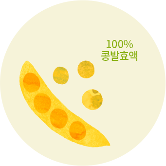
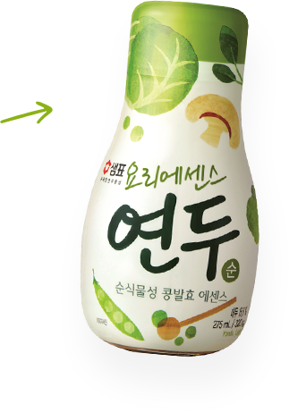
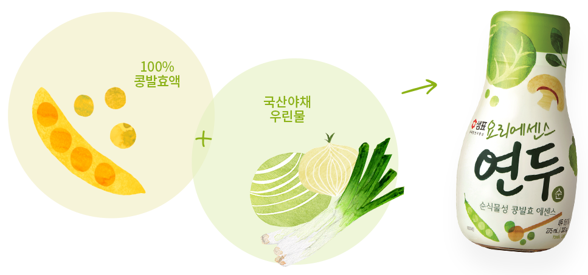

TOP

연두는 어떻게 만들어지나요?
연두는 장과 마찬가지로 콩을 발효해 만들었습니다.
샘표만의 발효기술을 통해 콩의 천연 맛성분을 에센스화하여
국산 야채로 맛의 밸런스를 맞춘 순식물성 콩발효 에센스입니다.



콩은?
콩에는 천연의 맛 성분인 주요 아미노산과 펩타이드가 소고기, 멸치, 표고버섯보다 많고,
그 자체의 맛과 향이 강하지 않아 원재료 본연의 맛을 살려줍니다.

연두를 사용하면?
- 연두는 콩을 발효해
요리 재료가 가진 좋은 맛을
잘 살려줍니다. - 푹 고아낸
깊고 풍부한 맛의 육수를 만들어
조리시간도 줄일 수 있습니다. - 복잡한 양념없이
연두만으로도 요리가
맛있고 쉬워집니다. - 소금 대신 사용하면
나트륨 섭취를 줄여
더 건강합니다.
나물요리
갖은 양념없이 연두만으로 무치면
나물의 향과 맛을 그대로
국, 찌개 요리
국물 요리의
맛을 깊고 진하게
겉절이 등 양념
잘 숙성된 깊은
양념의 맛 그대로
고기, 생선 요리
재료가 가진 비린내, 누린내는
없애고 고소하게